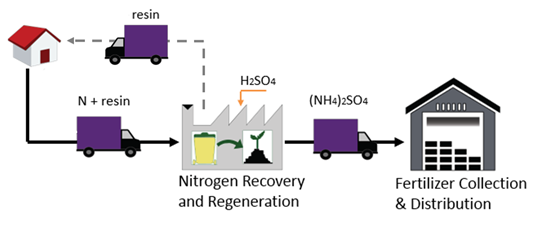
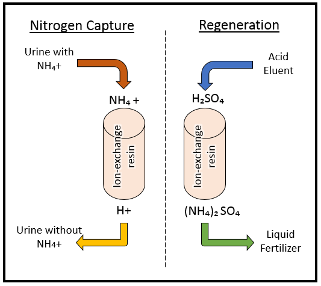
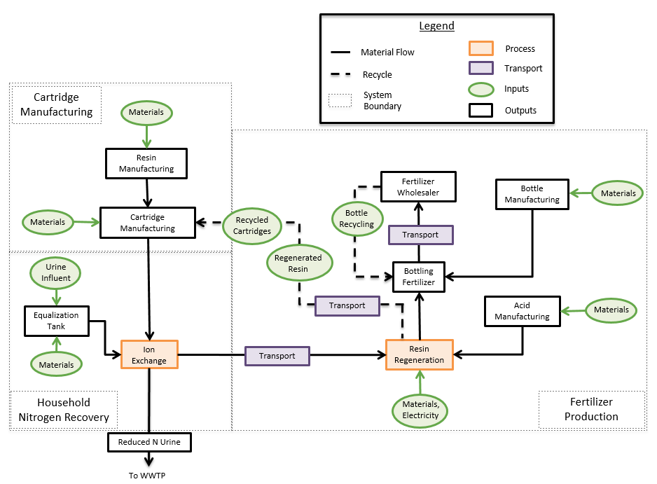
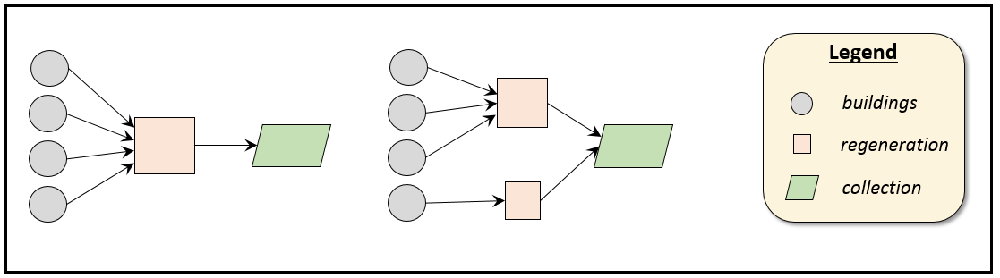

A modeling framework for decentralized nutrient management
Wastewater is generated from our cities dischangres and runoff. It is usually considered a waste product that needs to be safely discharged back to the environment. Apart from the contaminants and pollutants that it contains, wastewater also contains nutrients. San Francisco along with other urban areas, plan large capital investments for nutrient management in the wastewater to avoid and reduce eutrophication in the receiving bodies. Urine has received increasing interest in recent years as it comprises only 1% of the wastewater volume but contains the majority of the nutrient concentration. Extracting the nutrients, specifically nitrogen, from source separated urine can eliminate the need for nitrogen removal at the centralized wastewater treatment plants and potentially save large amounts of energy requirements and economic costs. Physical separation of urine from the wastewater can be easily done at the source before the urine and feces are mixed by the introduction of source separating toilet fixtures. The nitrogen can then be extracted from the urine before it is mixed with the rest of the wastewater for further treatment.
This work aims to conduct a life-cycle feasibility study to assess the environmental and economic requirements of decentralized nitrogen management from source separated urine. We wish to evaluate the life-cycle impacts of a decentralized nitrogen removal technology and assess the logistics and management impacts of implementing the decentralized technology in a real case study.
This work focuses on assessing ion-exchange as a potential technology for removing nitrogen from uring through adsorption. Due to its positive charge nitrogen can adsorb onto cation exchange resins in the form of ammonium (NH4+). Ion exchange is a well established technology in water treatment but only recently has it been applied to nitrogen removal and recovery. As it is a physicochemical process, ion-exchange is a more stable and predicable process than conventional biological nitrogen removal that can be highly affected by pH, temperature and oxygen concentration.
The objective of this study was to use laboratory results to inform real world implementation. By translating the experimental results into implementation parameters and combining them with management scenarios, we were able to assess the feasibility of decentralized ion-exchange implementation and evaluate the energy intesity, cost and greenhouse gas (GHG) emissions of the overall process.
Ion exchange is a well-established technology in water treatment, mainly used for for removing impurities from drinking water, combined wastewater, and landfill leachate. Only recently has it been applied to urine for nitrogen recovery. Urine is an ideal solution for ammonium recovery via ion exchange because of its high total ammonia nitrogen concentration, which can be adsorbed onto negatively charged adsorbents.
In this study, we used a synthetic resin for nitrogen capture with ammonium specificity and high adsorption capacity. When the system is in operation, urine flows through a fixed bed reactor filled with resin and the ammonium get adsorbed on the resin particles. The output stream involves urine, almost nitrogen free. In order to be able to reuse the resin, a regeneration stage has to occur. At this stage, acid flows through the saturated adsorbent which elutes the ammonium, creating ammonium sulfate concentrate. A by-product of this process is the liquid ammonium sulfate concentrate which can be used as fertilizer.
In this study, we intended on connecting laboratory results to techno-economic and environmental analysis and analyzing the life-cycle impacts of decentralized nitrogen management through ion-exchange.
All processes that contribute to the energy intensity, GHG emissions and cost of the ion-exchange technology where included in the data inventory for the analysis. The life-cycle assessment involved both the economic input - output LCA (EIO-LCA) and process based LCA models. Laboratory results were used to estimate the amount of materials needed and duration of processes to estimate their energy demand. A schematic of the process map is shown below.
Implementing nitrogen capture at the household level requires estimating the transportation impacts of the last-mile logistics for the collection of the nitrogen in a collection facility. Last-mile logistics is a term used in supply chain management and refers to the transportation involved in the last step of the process, usually from a hub to the people's homes or vice-versa. If we want to assess the overall impacts of a decentralized nitrogen management strategy, the logistics part should be modeled in detail as it could be a significant part of the overall impacts.

This work summarizes previous published research. The findings and results of the original study can be found in the Environmental Science and Technology Journal under the titled publication Advanced spatial modeling and lifecycle assessment for real world implementation of decentralized nitrogen recovery.
Olga Kavvada is a phD Student in Civil and Environmental Engineering at U.C. Berkeley. Her work involves systems-level analysis to improve our usage of energy and water resources under the constraints of climate change.
William A. Tarpeh is a phD Student in Civil and Environmental Engineering at U.C. Berkeley. His research involves creating innovative technologies for nitrogen recovery through urine separation.
Dr. Kara Nelson is a professor of Civil and Environmental Engineering at U.C. Berkeley. Her teaching and research address innovative strategies to increase the sustainability of urban water infrastructure around the world. She leads the engineering research thrust at ReNUWIt.
Dr. Arpad Horvath is a professor of Civil and Environmental Engineering at UC Berkeley. His teaching and research involves life-cycle environmental and economic assessment of products, processes, and services to answer important questions about civil infrastructure systems and the built environment.
Do you have questions or comments? Please contact Olga Kavvada: @okavvada or email okavvada@gmail.com.
{kind=link}
{kind=link}
{kind=link}
{kind=link}
{kind=link}